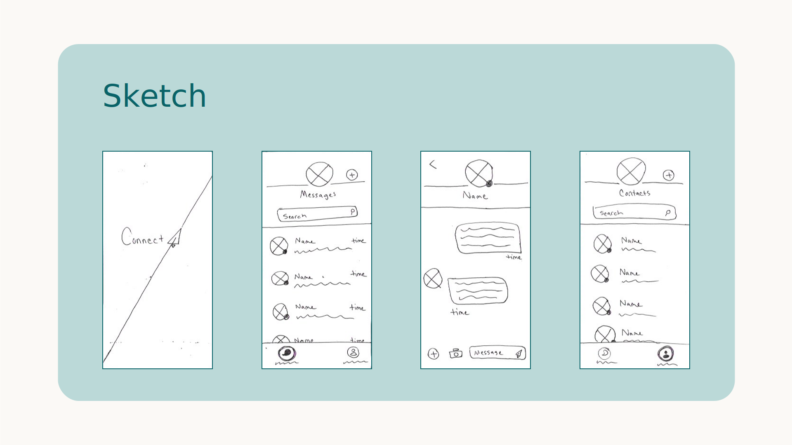

Connect
Objective
Produce at least three screens with finished UI design for a messaging app, and include navigational animation. Create a UI kit containing UI elements and typography guidelines that allows others to design additional screens in the future with confidence.
My Process
Research
To start, I spent some time checking out other messaging app designs, predominantly Facebook Messenger.
Sketch
Next, I sketched out the three screen designs plus an app logo screen on paper a few times to visualize my options.

UI Kit
I then headed over to Adobe XD to create my UI kit containing reusable UI elements and typography guidelines for the app.
Design
After I knew exactly where I wanted to take the design, I continued working in Adobe XD to digitize the wireframes.

Refine
I asked around for feedback on the design choices I had made and, using my discretion, refined the UI accordingly.
Animate
Lastly, I animated the prototype in Adobe XD to demonstrate the app’s navigation.